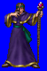
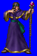
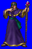
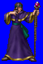

Height: 180 cm. Weight: About 170 lbs.
Habitat: Town, village Origin: ???
Meaning: Prognosticator
The same as a mage or magic-user. Usually sorcerers possess powerful black magic or attack spells, although some possess the power to manipulate those of little will. In the middle ages, sorcerers were often thought to use witchcraft to try to predict the future, and thus sought out and put on trial. In RPGs, sorcerers are not always enemies, but also allies.